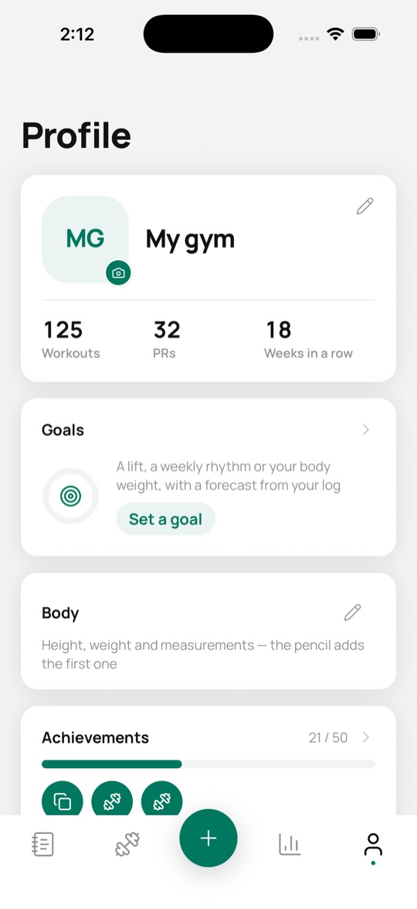
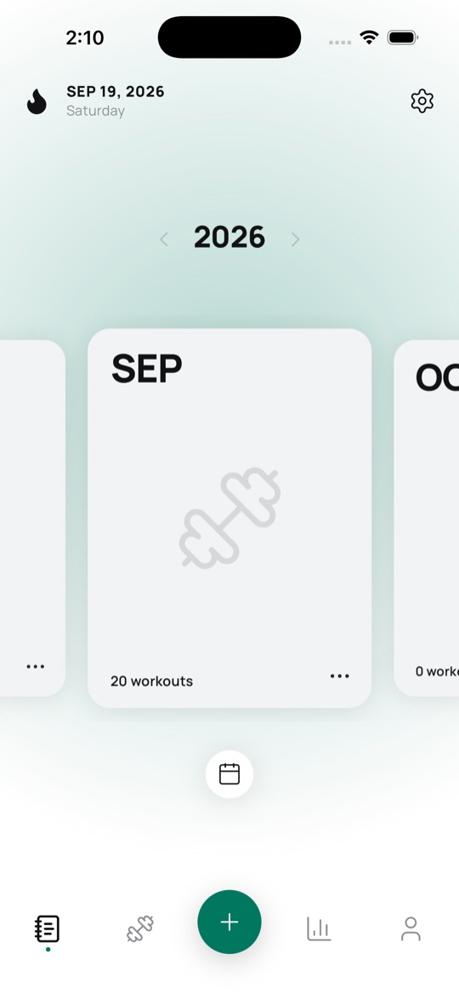
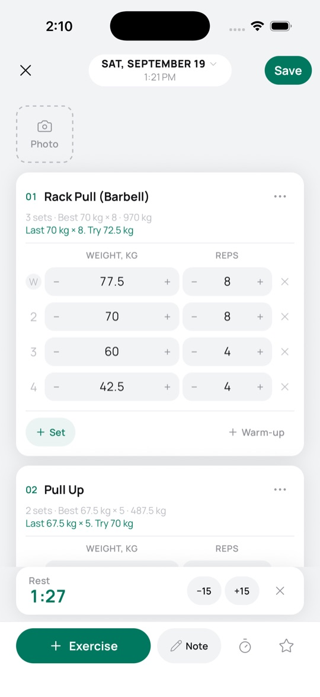
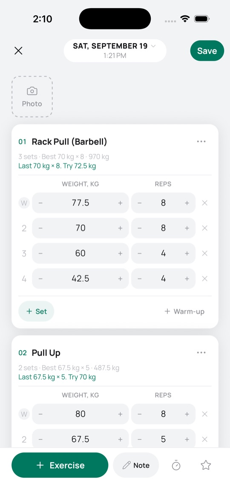
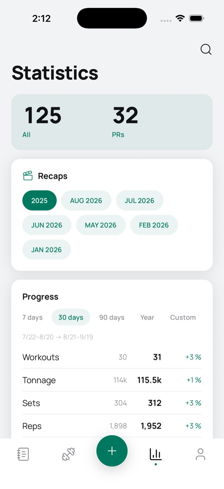

Gym Cards
A workout diary that stays on your phone. One exercise or one photo is already a workout.



No account. No ads. No tracking.Everything you log is written to your device. It leaves the phone only when you export or share it yourself, or when you turn on backup to your own iCloud (Gym Cards Pro).
What it does
Log a session in seconds: exercises, sets, weight, reps, warm-ups, personal records.

Every month is a card you can give a cover photo or a colour.
Statistics, streaks, personal records and period comparison.

Attach progress photos and technique videos to any workout.
Track body weight, body fat and measurements over time.
Build your own exercise library, with your own notes and galleries.
Export to CSV, JSON or a printable month PDF, and import it back.
Light and dark themes, six languages, works fully offline.
Gym Cards · Maksym Tytechko
Gym Cards
Щоденник тренувань, який лишається у вашому телефоні. Одна вправа або одне фото вже є тренуванням.
Без акаунта. Без реклами. Без відстеження.Усе, що ви записуєте, зберігається на пристрої. Воно залишає телефон, лише коли ви самі експортуєте чи поширюєте його або вмикаєте бекап у власний iCloud (Gym Cards Pro).
Що вміє
Запис тренування за секунди: вправи, підходи, вага, повторення, розминка, особисті рекорди.
Кожен місяць стає карткою, якій можна дати обкладинку-фото або колір.
Статистика, серії, особисті рекорди й порівняння періодів.
Фото прогресу й відео техніки до будь-якого тренування.
Вага, відсоток жиру й обхвати в часі.
Власна бібліотека вправ із вашими нотатками й галереями.
Експорт у CSV, JSON або PDF місяця на друк, а потім імпорт назад.
Світла й темна теми, шість мов, повністю офлайн.
Gym Cards · Титечко Максим
Gym Cards
Dziennik treningowy, który zostaje w twoim telefonie. Jedno ćwiczenie albo jedno zdjęcie to już trening.
Bez konta. Bez reklam. Bez śledzenia.Wszystko, co zapisujesz, trafia na twoje urządzenie. Opuszcza telefon tylko wtedy, gdy samodzielnie to eksportujesz lub udostępniasz albo gdy włączysz kopię zapasową na twój własny iCloud (Gym Cards Pro).
Co potrafi
Zapis treningu w kilka sekund: ćwiczenia, serie, ciężar, powtórzenia, rozgrzewka, rekordy życiowe.
Każdy miesiąc to karta, której możesz dać zdjęcie na okładkę albo kolor.
Statystyki, passy, rekordy życiowe i porównanie okresów.
Zdjęcia postępów i filmy z techniką przy dowolnym treningu.
Waga ciała, tkanka tłuszczowa i obwody w czasie.
Własna biblioteka ćwiczeń z twoimi notatkami i galeriami.
Eksport do CSV, JSON albo miesięcznego PDF do druku, a potem import z powrotem.
Jasny i ciemny tryb, sześć języków, działa w pełni offline.
Gym Cards · Maksym Tytechko
Gym Cards
Ein Trainingstagebuch, das auf deinem Handy bleibt. Eine Übung oder ein Foto ist schon ein Training.
Kein Konto. Keine Werbung. Kein Tracking.Alles, was du einträgst, wird auf deinem Gerät gespeichert. Es verlässt das Handy nur, wenn du es selbst exportierst oder teilst oder wenn du das Backup in deine eigene iCloud einschaltest (Gym Cards Pro).
Was die App kann
Ein Training in Sekunden eintragen: Übungen, Sätze, Gewicht, Wiederholungen, Aufwärmsätze, persönliche Rekorde.
Jeder Monat ist eine Karte, der du ein Titelbild oder eine Farbe geben kannst.
Statistik, Serien, persönliche Rekorde und Vergleich von Zeiträumen.
Fortschrittsfotos und Technikvideos an jedes Training anhängen.
Körpergewicht, Körperfett und Maße über die Zeit verfolgen.
Deine eigene Übungsbibliothek, mit deinen Notizen und Galerien.
Export als CSV, JSON oder druckbares Monats-PDF, und Import zurück in die App.
Heller und dunkler Modus, sechs Sprachen, funktioniert komplett offline.
Gym Cards · Maksym Tytechko
Gym Cards
Un diario de entrenamiento que se queda en tu teléfono. Un ejercicio o una foto ya cuentan como entrenamiento.
Sin cuenta. Sin anuncios. Sin rastreo.Todo lo que registras se guarda en tu dispositivo. Solo sale del teléfono cuando lo exportas o lo compartes tú, o cuando activas la copia de seguridad en tu propio iCloud (Gym Cards Pro).
Qué hace
Registra una sesión en segundos: ejercicios, series, peso, repeticiones, calentamientos y récords personales.
Cada mes es una tarjeta a la que puedes ponerle una foto de portada o un color.
Estadísticas, rachas, récords personales y comparación de periodos.
Añade fotos de progreso y videos de técnica a cualquier entrenamiento.
Sigue tu peso, tu grasa corporal y tus medidas a lo largo del tiempo.
Crea tu propia biblioteca de ejercicios, con tus notas y tus galerías.
Exporta a CSV, JSON o un PDF del mes para imprimir, y vuelve a importarlo.
Temas claro y oscuro, seis idiomas y funciona totalmente sin conexión.
Gym Cards · Maksym Tytechko
Gym Cards
Um diário de treino que fica no seu celular. Um exercício ou uma foto já vale como treino.
Sem conta. Sem anúncios. Sem rastreamento.Tudo o que você registra fica gravado no seu aparelho. Só sai do celular quando você exporta ou compartilha por conta própria, ou quando ativa o backup no seu próprio iCloud (Gym Cards Pro).
O que ele faz
Registre um treino em segundos: exercícios, séries, peso, repetições, aquecimento, recordes pessoais.
Cada mês é um card, e você pode dar a ele uma foto de capa ou uma cor.
Estatísticas, sequências, recordes pessoais e comparação de períodos.
Adicione fotos de progresso e vídeos de técnica a qualquer treino.
Acompanhe peso corporal, gordura corporal e medidas ao longo do tempo.
Monte sua própria biblioteca de exercícios, com suas notas e galerias.
Exporte para CSV, JSON ou um PDF do mês para imprimir, e importe de volta.
Temas claro e escuro, seis idiomas, funciona totalmente offline.
Gym Cards · Maksym Tytechko